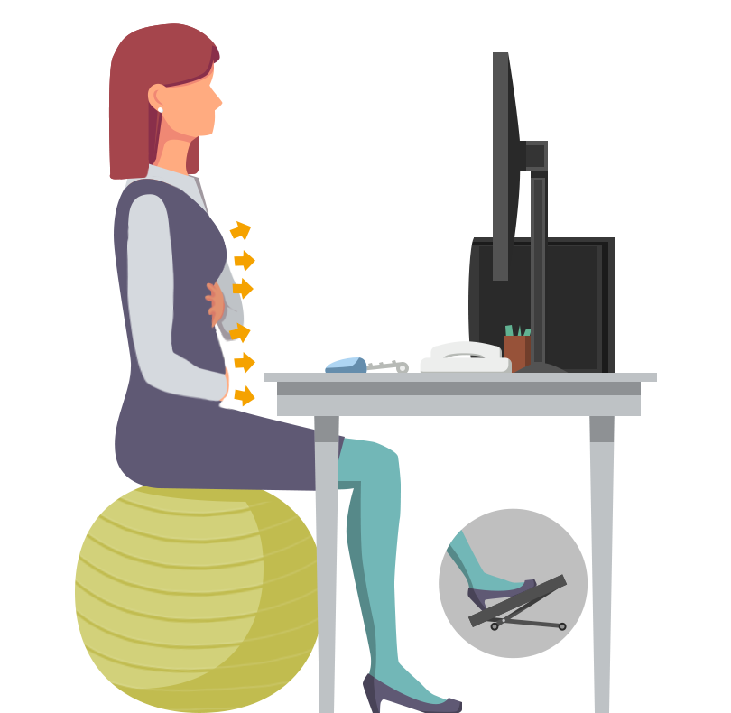
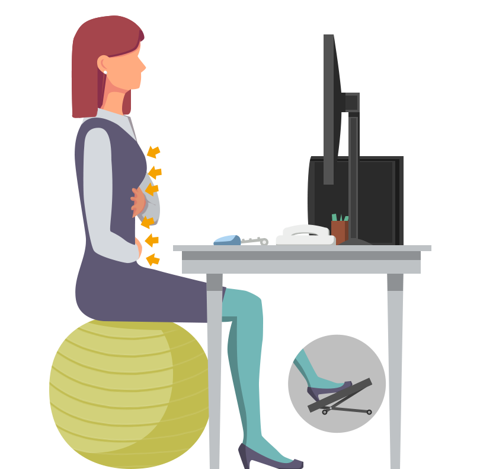

<div class="app-main" id="app-exercise-breath">
    ${require('./partial/warm-up.html')}
    <div class="app-page app-page-1 undisplayed">
        <div class="app-illustrations">
            <div class="step step-0 step-image"></div>
            <div class="transparent step step-1 step-inspiration step-image"></div>
            <div class="transparent step step-2 step-expiration step-image"></div>
            <div class="transparent step step-inspiration-advice step-image"></div>
            <div class="transparent step step-expiration-advice step-image"></div>
        </div>
        <div class="app-texts">
            <div class="app-instructions">
                <p class="step step-0 step-text">Mettez une main sur le ventre, l’autre sur le thorax.</p>
                <div class="step step-1 step-inspiration">
                    <p class="transparent step-text">Inspirez en gonflant le ventre et le thorax, sans lever les épaules.</p>
                    
                </div>
                <div class="step step-2 step-expiration">
                    <p class="transparent step-text">Expirez et sentez votre ventre se dégonfler et votre thorax se rabaisser.</p>
                    
                </div>
                <p class="transparent step step-text step-loop">Répétez de manière fluide, sans jamais forcer.</p>
            </div>
            <div class="app-advices transparent">
                <h2>Conseils & Astuces</h2>
                <p class="step step-text step-inspiration">En inspirant, vous devez sentir que vos 2 mains s’écartent : le ventre vient épouser votre main, votre thorax se relève.</p>
                <p class="undisplayed step step-text step-expiration">En expirant, le thorax s’affaisse et le ventre rentre.</p>
                <p class="undisplayed step step-text step-respiration">Arrêter dès le moindre signe de vertige, nausée, hyperventilation ou malaise.</p>
            </div>
        </div>
    </div>
</div>